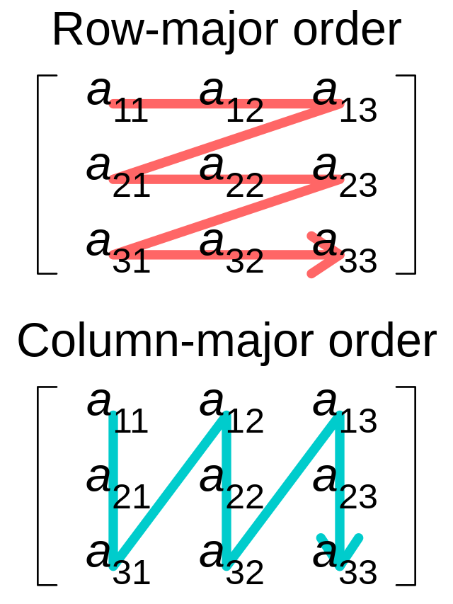

Array and Broadcasting
Array indexing and broadcasting
Julia array can be initialized with multiple ways.
julia> A = [1, 2, 3]; # a vectorjulia> B = [1 2 3; 4 5 6; 7 8 9]; # a matrixjulia> zero_vector = zeros(3); # zero vectorjulia> rand_vector = randn(Float32, 3, 3); # random normal distributionjulia> step_vector = collect(1:3); # collect from a rangejulia> uninitialized_vector = Vector{Int}(undef, 3); # uninitialized vector of size 3
Julia array indexing starts from 1, which is different from C, Python, and R. 😞
julia> A = [1, 2, 3];julia> A[1] # the first element1julia> A[end] # the last element3julia> A[1:2] # the first two elements2-element Vector{Int64}: 1 2julia> A[2:-1:1] # the first two elements in the reversed order2-element Vector{Int64}: 2 1
julia> B = [1 2 3; 4 5 6; 7 8 9];julia> B[1:2] # the first two elements, returns B[1,1] and B[2,1] since B is column-major2-element Vector{Int64}: 1 4julia> B[1:2, 1:2] # returns a submatrix2×2 Matrix{Int64}: 1 2 4 5
Julia has a powerful broadcasting mechanism. It is a way to apply a function to each element of an array. The broadcasting is done by adding a dot . before the function name.
julia> x = 0:0.1π:2π0.0:0.3141592653589793:6.283185307179586julia> y = sin.(x) .+ cos.(3 .* x);
The broadcasting also does the loop fusion, which means only one loop is used to iterate over the elements of the array and no intermediate array is created. This is often more efficient than the step-by-step loop.
We can use Ref to protect an object from being broadcasted.
julia> Ref([3,2,1,0]) .* (1:3)3-element Vector{Vector{Int64}}: [3, 2, 1, 0] [6, 4, 2, 0] [9, 6, 3, 0]
We can see the vector is treated as a whole.
Julia array is column-major
In Julia, arrays are stored in column-major order. This may affect the performance of the code.
For example, we can implement the Frobenius norm of a matrix as follows.
julia> function frobenius_norm(A::AbstractMatrix) s = zero(eltype(A)) # the `@inbounds` macro tells the compiler that the loop is safe and it can skip the boundary check. @inbounds for i in 1:size(A, 1) for j in 1:size(A, 2) s += A[i, j]^2 end end return sqrt(s) endfrobenius_norm (generic function with 1 method)
julia> A = randn(1000, 1000);julia> frobenius_norm(A)1000.0152494162214
julia> using BenchmarkTools
julia> @benchmark frobenius_norm($A)
BenchmarkTools.Trial: 25 samples with 1 evaluation.
Range (min … max): 203.310 ms … 214.439 ms ┊ GC (min … max): 0.00% … 0.00%
Time (median): 204.769 ms ┊ GC (median): 0.00%
Time (mean ± σ): 205.331 ms ± 2.247 ms ┊ GC (mean ± σ): 0.00% ± 0.00%
▃ ▃▃███▃ ▃
█▁▇▁██████▇█▁▁▇▁▁▁▁▁▁▇▁▁▁▁▁▁▁▁▁▁▇▁▁▁▁▁▁▁▁▁▁▁▁▁▁▁▁▁▁▁▁▁▁▁▁▁▁▁▇ ▁
203 ms Histogram: frequency by time 214 ms <
Memory estimate: 0 bytes, allocs estimate: 0.Alternatively, we can loop over the second index first.
julia> function frobenius_norm_colmajor(A::AbstractMatrix) s = zero(eltype(A)) @inbounds for j in 1:size(A, 2) for i in 1:size(A, 1) s += A[i, j]^2 end end return sqrt(s) endfrobenius_norm_colmajor (generic function with 1 method)
julia> @benchmark frobenius_norm_colmajor($A)
BenchmarkTools.Trial: 53 samples with 1 evaluation.
Range (min … max): 90.380 ms … 133.823 ms ┊ GC (min … max): 0.00% … 0.00%
Time (median): 92.729 ms ┊ GC (median): 0.00%
Time (mean ± σ): 94.415 ms ± 6.425 ms ┊ GC (mean ± σ): 0.00% ± 0.00%
▂ ▂█ ▄ ▂
▆██▄█▆████▆▆▄█▄▁▁▁▁▄▄▄▁▁▁▁▁▁▁▁▁▄▁▁▁▄▁▁▁▁▄▁▄▁▁▁▁▁▁▁▁▁▁▁▁▁▁▁▁▄ ▁
90.4 ms Histogram: frequency by time 108 ms <
Memory estimate: 0 bytes, allocs estimate: 0.We can see by simply changing the order of the loop, the performance is improved by more than 2 times. This is because the memory access pattern is more cache-friendly.
Example: create a meshgrid for triangular lattice
julia> b1 = [1, 0]2-element Vector{Int64}: 1 0julia> b2 = [0.5, sqrt(3)/2]2-element Vector{Float64}: 0.5 0.8660254037844386julia> n = 55julia> mesh1 = [i * b1 + j * b2 for i in 1:n, j in 1:n] # list comprehension5×5 Matrix{Vector{Float64}}: [1.5, 0.866025] [2.0, 1.73205] … [3.0, 3.4641] [3.5, 4.33013] [2.5, 0.866025] [3.0, 1.73205] [4.0, 3.4641] [4.5, 4.33013] [3.5, 0.866025] [4.0, 1.73205] [5.0, 3.4641] [5.5, 4.33013] [4.5, 0.866025] [5.0, 1.73205] [6.0, 3.4641] [6.5, 4.33013] [5.5, 0.866025] [6.0, 1.73205] [7.0, 3.4641] [7.5, 4.33013]julia> mesh2= (1:n) .* Ref(b1) .+ (1:n)' .* Ref(b2) # broadcasting5×5 Matrix{Vector{Float64}}: [1.5, 0.866025] [2.0, 1.73205] … [3.0, 3.4641] [3.5, 4.33013] [2.5, 0.866025] [3.0, 1.73205] [4.0, 3.4641] [4.5, 4.33013] [3.5, 0.866025] [4.0, 1.73205] [5.0, 3.4641] [5.5, 4.33013] [4.5, 0.866025] [5.0, 1.73205] [6.0, 3.4641] [6.5, 4.33013] [5.5, 0.866025] [6.0, 1.73205] [7.0, 3.4641] [7.5, 4.33013]
using CairoMakie
scatter(vec(getindex.(mesh2, 1)), vec(getindex.(mesh2, 2)), label="mesh2", ratio=1, markersize=10)Benchmark: matrix multiplication
Matrix multiplication is a fundamental operation in scientific computing. Julia's built-in * operator is backed by highly optimized BLAS libraries. Let's benchmark the performance of matrix multiplication.
julia> @benchmark $A * $B
BenchmarkTools.Trial: 383 samples with 1 evaluation.
Range (min … max): 12.089 ms … 38.311 ms ┊ GC (min … max): 0.00% … 0.00%
Time (median): 12.873 ms ┊ GC (median): 0.00%
Time (mean ± σ): 13.052 ms ± 1.418 ms ┊ GC (mean ± σ): 1.20% ± 3.41%
▄▆▅ ▂▄▇█▇▅▅▄
▆▁▁▁▁████████████▆▆▁▄▁▁▄▁▄▁▆▆▇▄▇▄▇█▇▇▁▁▇▁▆▁▆▄▁▄▁▁▁▁▁▁▁▁▁▁▁▄ ▇
12.1 ms Histogram: log(frequency) by time 15.8 ms <
Memory estimate: 7.63 MiB, allocs estimate: 2.The performance of a CPU is measured by the number of floating point operations per second (FLOPS) it can perform. The floating point operations include addition, subtraction, multiplication and division. The FLOPS can be related to multiple factors, such as the clock frequency, the number of cores, the number of instructions per cycle, and the number of floating point units. A simple way to measure the FLOPS is to benchmarking the speed of matrix multiplication. The number of FLOPS in a $n\times n\times n$ matrix multiplication is $2n^3$. The FLOPS can be calculated as: $2 \times 1000^3 / (12.089 \times 10^{-3}) \approx 165~{\rm GFLOPS}$.